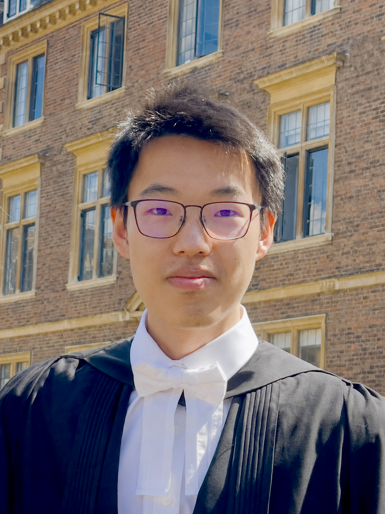

Causal Basis of Biases in Visual Estimation.
BA Thesis. Supervisor: Prof. Paul Bays.
PhD Candidate at SensorimotorLab, Donders Insitute for Brain, Cognition, and Behaviour. Experiences in computational modelling, neural networks, human behavioural experiments.

BA Thesis. Supervisor: Prof. Paul Bays.
MSc Thesis. Supervisor: Dr. Greg Davis.